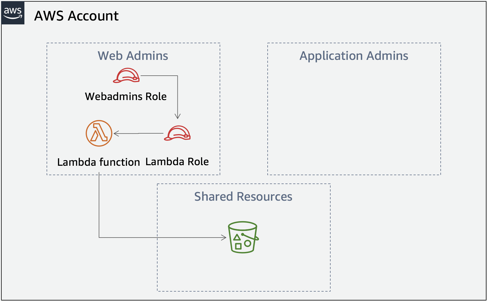

Permission boundaries workshop Verify phase
It's now time VERIFY the setup the admins did by putting on the webadmins hat. As the webadmins you will check that you can do the following:
- Create an IAM policy
- Create an IAM role (and attach that policy)
- Create a Lambda function (and attach that role)
If doing this as part of an AWS event you should have received the following information from another team. You will need the Account ID and the Resource restriction information to complete the tasks in this phase.
Webadmins role ARN: arn:aws:iam::`ACCOUNT_ID_FROM_OTHER_TEAM`:role/**webadmins** Resource restriction for both the roles and policies: /webadmins/`Resource restriction` Permissions boundary name: **webadminspermissionsboundary** Permission policy name: **webadminspermissionpolicy**
- To carry out these tasks as the webadmins, you will need to assume that role. To make that process easier, add the following to the
~/.aws/configfile:
[profile webadmins] role_arn = arn:aws:iam::ACCOUNT_ID_FROM_OTHER_TEAM:role/webadmins source_profile = default
When you want to reference a profile other then the default one you need to add the --profile parameter to the CLI command. Since we are naming this profile webadmins, you will see that --profile webadmins has been added to all the commands in this phase.
Application architecture

Attention
As in the Build phase, keep in mind where you need to add the Account ID, correctly use pathing and change the region specified if needed (although if you are taking this as part of an AWS event, just use the already specified us-east-1.) Also you will need to use the --profile parameter for all of the commands in the following tasks.
Task 1 Create a policy
First you will create a permission policy which just needs to allow log file creation and s3:ListBucket. You are in a hurry though, like many developers, and give the role full S3 permissions. The policy you create here will later be attached to the role you create in Task 2 which will then be passed to a Lambda function you will create in Task 3.
- Use the following JSON to create a file named
verifypolicydoc.json:
{ "Version": "2012-10-17", "Statement": [ { "Effect": "Allow", "Action": [ "logs:CreateLogGroup", "logs:CreateLogStream", "logs:PutLogEvents", "s3:*" ], "Resource": "*" } ] }
- Create the policy (there is a key parameter missing from the command below. Check the AWS CLI documentation to determine the missing parameter. )
aws iam create-policy --policy-name NAME_OF_POLICY --policy-document file://verifypolicydoc.json --profile webadmins
Task 2 Create a role
The role you create here will be passed to the Lambda function you create in the next task.
- Use the following JSON to create a file named
verifytrustpolicy.json(replace the Account ID):
{ "Version": "2012-10-17", "Statement": { "Effect": "Allow", "Principal": { "Service": "lambda.amazonaws.com" }, "Action": "sts:AssumeRole" } }
- Create the role (there is a key parameter missing from the command below. Check the AWS CLI documentation to determine the missing parameter. )
aws iam create-role --role-name NAME_OF_ROLE --path /webadmins/ --assume-role-policy-document file://verifytrustpolicy.json --profile webadmins
- Attach the policy you created in Task 1 to the role:
aws iam attach-role-policy --policy-arn arn:aws:iam::<ACCOUNT_ID_FROM_OTHER_TEAM>:policy/webadmins/NAME_OF_POLICY --role-name NAME_OF_ROLE --profile webadmins
Task 3 Create and test a Lambda function
Finally, you will create a Node.js 8.10 Lambda function using the sample code below and pass the IAM role you just created:
- Create a file named
index.jsusing the code below. Replace"SHARED_LOGGING_BUCKET_NAME"with the name of bucket that begins with"shared-logging-"and ends in"-data". In order to get the bucket name, just runaws s3 ls --profile webadmins.)
const AWS = require('aws-sdk'); const s3 = new AWS.S3(); exports.handler = async (event) => { console.log('Loading function'); const allKeys = []; await getKeys({ Bucket: 'SHARED_LOGGING_BUCKET_NAME' , Prefix: 'webadmins'}, allKeys); return allKeys; }; async function getKeys(params, keys){ const response = await s3.listObjectsV2(params).promise(); response.Contents.forEach(obj => keys.push(obj.Key)); if (response.IsTruncated) { const newParams = Object.assign({}, params); newParams.ContinuationToken = response.NextContinuationToken; await getKeys(newParams, keys); } }
- Zip the index.js file for upload to Lambda
zip lambdafunction.zip index.js
- Create a Lambda function
aws lambda create-function --function-name verifyfunction --runtime nodejs8.10 --role arn:aws:iam::<ACCOUNT_ID_FROM_OTHER_TEAM>:role/webadmins/NAME_OF_ROLE --handler index.handler --region us-east-1 --zip-file fileb://lambdafunction.zip --profile webadmins
- Invoke the Lambda function and make sure it is generating logs in CloudWatch logs and that it is able to list the objects in the bucket.
aws lambda invoke --function-name verifyfunction --region us-east-1 --invocation-type RequestResponse outputfile.txt --profile webadmins
- Examine the output file. It should show a number of log files in the S3 bucket that the Lambda function read.
If you see files marked that webadmins/you-should-SEE-this-file--webadmins... then you have successfully verified that the webadmins can do their job. Congratulations!
Task 4 Cleanup
To cleanup you need to delete the CloudFormation stack named Perm-Bound-Adv (this will also remove the Cloud9 stack) and the IAM resources you created. Run the following commands:
Delete the webadmins role:
aws iam delete-role --role-name webadmins
Delete the permission policy:
aws iam delete-policy --policy-arn arn:aws:iam::<ACCOUNT_ID>:policy/webadminspermissionpolicy
Delete the permissions boundary:
aws iam delete-policy --policy-arn arn:aws:iam::<ACCOUNT_ID>:policy/webadminspermissionsboundary
Delete the CloudFormation stack:
aws cloudformation delete-stack --stack-name Perm-Bound-Adv